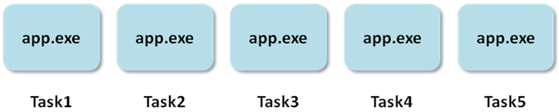
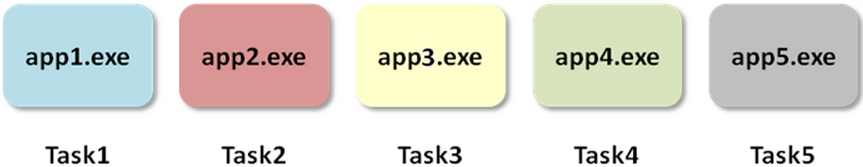

Rmpi
MPI (Message Passing Interface) avec le langage R
Ces supports reprennent très largement les supports de cours MPI de l’IDRIS écrits par Dimitri Lecas, Rémi Lacroix, Serge Van Criekingen et Myriam Peyrounette. J’ai utilisé également les ressources suivantes:
- Site officiel de Rmpi
- How to run R programs on University of Maryland HPC facility
- Documentation de GRICAD
- MPI Tutorial by Wes Kendall
- CRAN Task View: High-Performance and Parallel Computing with R
- R_note by Wei-Chen Chen
Introduction
L’utilisation de la bibliothèque MPI permet d’exploiter le parallélisme des ordinateurs en utilisant le paradigme de l’échange de messages.
On parle de programme séquentiel lorsqu’il est exécuté par un et un seul processus. Dans ce cas, toutes les variables et constantes sont allouées dans la mémoire allouée au processus
Dans un programme parallèle par échanges de messages
- Le programme est exécuté simultanément dans plusieurs processus.
- Toutes les variables sont privées et résident dans la mémoire locale allouée à chaque processus.
- Chaque processus exécute éventuellement des parties différentes d’un programme.
- Une donnée est échangée entre deux ou plusieurs processus via des appels de fonctions.
L’échange de messages
Le message est constitué de paquets de données transitant du processus émetteur au(x) processus récepteur(s). Il devra contenir:
- Les données (variables scalaires, tableaux, etc.)
- l’identificateur du processus émetteur
- le type de la donnée
- l’identificateur du processus récepteur.
Architecture des supercalculateurs
La plupart des supercalculateurs sont des machines à mémoire distribuée. Ils sont composés d’un ensemble de nœud, à l’intérieur d’un nœud la mémoire est partagée.
MPI vs OpenMP
OpenMP utilise un schéma à mémoire partagée, tandis que pour MPI la mémoire est distribuée.
Historique
- Version 1.0 : en juin 1994, le forum MPI, avec la participation d’une quarantaine d’organisations, aboutit à la définition d’un ensemble de sous-programmes concernant la bibliothèque d’échanges de messagesMPI
- Version 2.0 : apparue en juillet 1997, cette version apportait des compléments importants volontairement non intégrés dans MPI 1.0 (gestion dynamique de processus, copies mémoire à mémoire, entrées-sorties parallèles, etc.)
- Version 3.0 : septembre 2012, cette version apportait les communications collectives non bloquantes, nouvelle interface Fortran, etc.
- Version 4.0 : juin 2021
Implémentations MPI
Bibliothèques scientifiques parallèles
HDF5 : Lecture et écriture sur fichiers.
Anatomie d’un programme MPI
- initialiser l’environnement :
initialize - communicateur :
comm - rang :
rank - nombre de processus :
size - fermer :
finalize
Exemple C
Cloner le dépôt https://github.com/GroupeCalcul/ANFRCalculRmpi pour récupérer les exemples.
#include <mpi.h>
#include <stdio.h>
int main(int argc, char** argv) {
// Initialize the MPI environment
MPI_Init(NULL, NULL);
// Get the number of processes
int world_size;
MPI_Comm_size(MPI_COMM_WORLD, &world_size);
// Get the rank of the process
int world_rank;
MPI_Comm_rank(MPI_COMM_WORLD, &world_rank);
// Get the name of the processor
char processor_name[MPI_MAX_PROCESSOR_NAME];
int name_len;
MPI_Get_processor_name(processor_name, &name_len);
// Print off a hello world message
printf("Hello world from processor %s, rank %d out of %d processors\n",
processor_name, world_rank, world_size);
// Finalize the MPI environment.
MPI_Finalize();
}Compilation et exécution d’un code MPI en C
Pour compiler un code MPI, il faut faire le lien avec la librairie MPI utilisée en utilisant par exemple mpicc
> mpicc hello_mpi.c -o helloPackages ubuntu : libopenmpi-devet openmpi-bin
Pour exécuter un code MPI, on utilise un lanceur d’application MPI qui ordonne le lancement de l’exécution sur un nombre de processus choisi. Le lanceur défini par la norme MPI est mpiexec. Il existe également des lanceurs non standards, comme mpirun.
> mpiexec -n 4 ./hello
Hello world from processor ar039133.math.univ-rennes1.fr, rank 2 out of 4 processors
Hello world from processor ar039133.math.univ-rennes1.fr, rank 3 out of 4 processors
Hello world from processor ar039133.math.univ-rennes1.fr, rank 1 out of 4 processors
Hello world from processor ar039133.math.univ-rennes1.fr, rank 0 out of 4 processorsExemple Python
Pour les langages interprétés, il est nécessaire de lancer plusieurs sessions avec mpiexec ou mpirun pour utiliser MPI.
#!/usr/bin/env python
from mpi4py import MPI
size = MPI.COMM_WORLD.Get_size()
rank = MPI.COMM_WORLD.Get_rank()
name = MPI.Get_processor_name()
println(f"Hello, World! I am process {rank} of {size} on {name}")> mpiexec -n 4 python hello_mpi.py
Hello, World! I am process 2 of 4 on ar039133.math.univ-rennes1.fr
Hello, World! I am process 1 of 4 on ar039133.math.univ-rennes1.fr
Hello, World! I am process 3 of 4 on ar039133.math.univ-rennes1.fr
Hello, World! I am process 0 of 4 on ar039133.math.univ-rennes1.frExemple R SPMD (Single Program Multiple Data)

library(Rmpi)
id <- mpi.comm.rank(comm=0)
np <- mpi.comm.size(comm=0)
hostname <- mpi.get.processor.name()
msg <- sprintf ("Hello world from task %03d of %03d, on host %s \n", id , np , hostname)
cat(msg)
invisible(mpi.barrier(comm=0))
invisible(mpi.finalize())Pour une raison qui m’est inconnue, si on laisse la valeur comm=1 par défaut, l’exemple ne fonctionne pas.
Installation de l’environnement logiciel
$ Rscript -e 'install.packages("Rmpi")'$ mpiexec -np 4 Rscript hello_mpi.R
Hello world from task 003 of 004, on host srv-mingus
Hello world from task 000 of 004, on host srv-mingus
Hello world from task 001 of 004, on host srv-mingus
Hello world from task 002 of 004, on host srv-mingusExécution sur le cluster perseus
Installation de Rmpi et récupération du matériel
source /applis/environments/conda.sh
conda create -y -n rmpi r-rmpi -c conda-forge
conda activate rmpi
git clone https://github.com/GroupeCalcul/ANFRCalculRmpi
cd ANFRCalculRmpifichier hello_mpi.sh nécessaire à l’utilisation d’OAR
##!/bin/bash
#OAR --project pr-groupecalcul
#OAR -n hello_mpi
#OAR -l /nodes=1/core=4,walltime=00:01:00
#OAR --stdout hello_mpi.out
#OAR --stderr hello_mpi.err
## Ensure conda is loaded. The following line can be into your ~/.bashrc file.
source /applis/environments/conda.sh
## Run the program
conda activate rmpi
mpirun --np 4 --machinefile $OAR_NODE_FILE --mca plm_rsh_agent "oarsh" $OAR_WORKING_DIRECTORY/hello_mpi
mpirun --np 4 --machinefile $OAR_NODE_FILE --mca plm_rsh_agent "oarsh" Rscript $OAR_WORKING_DIRECTORY/hello_mpi.RCe script doit être exécutable
$ chmod +x hello_mpi.sh
$ ls -l hello_mpi.sh
-rwxr-xr-x 1 login-perseus l-formations 567 Sep 24 14:30 hello_mpi.sh
$ oarsub -S ./hello_mpi.sh
[ADMISSION RULE] Antifragmentation activated
[ADMISSION RULE] No antifrag for small jobs
[FAST] Adding fast resource constraints
[PARALLEL] Small jobs (< 32 cores) restricted to tagged nodes
[ADMISSION RULE] Modify resource description with type constraints
[ADMISSION RULE] Found job type [verysmall]
[ADMISSION RULE] Automatically add job type [verysmall]
OAR_JOB_ID=26118495$ oarstat -u
Job id S User Duration System message
--------- - -------- ---------- ------------------------------------------------
26118496 W navarop- 0:00:00 R=4,W=0:1:0,J=B,N=hello_rmpi,P=groupecalcul,T=heterogeneous|verysmall
$ oarstat -u
Job id S User Duration System message
--------- - -------- ---------- ------------------------------------------------
26118496 L navarop- 0:00:03 R=4,W=0:1:0,J=B,N=hello_rmpi,P=groupecalcul,T=heterogeneous|verysmall (Karma=0.004,quota_ok)
$ oarstat -u
Job id S User Duration System message
--------- - -------- ---------- ------------------------------------------------
26118496 R navarop- 0:00:06 R=4,W=0:1:0,J=B,N=hello_rmpi,P=groupecalcul,T=heterogeneous|verysmall (Karma=0.004,quota_ok)
$ oarstat -u
Job id S User Duration System message
--------- - -------- ---------- ------------------------------------------------
26118496 F navarop- 0:00:18 R=4,W=0:1:0,J=B,N=hello_rmpi,P=groupecalcul,T=heterogeneous|verysmall (Karma=0.004,quota_ok)$ cat hello_mpi.out
Hello world from processor dahu146, rank 3 out of 4 processors
Hello world from processor dahu146, rank 2 out of 4 processors
Hello world from processor dahu146, rank 0 out of 4 processors
Hello world from processor dahu146, rank 1 out of 4 processors
Hello world from task 003 of 004, on host dahu146
Hello world from task 000 of 004, on host dahu146
Hello world from task 002 of 004, on host dahu146
Hello world from task 001 of 004, on host dahu146Exemple R MPMD (Multiple Program Multiple Data)

library(Rmpi)
mpi.spawn.Rslaves(nslaves = 4, needlog = FALSE)
mpi.bcast.cmd( id <- mpi.comm.rank() )
mpi.bcast.cmd( np <- mpi.comm.size() )
mpi.bcast.cmd( host <- mpi.get.processor.name() )
result <- mpi.remote.exec(paste("I am", id, "of", np, "running on", host))
print(unlist(result))
mpi.close.Rslaves(dellog = FALSE)
mpi.exit()$ Rscript hello_mpmd.R
4 slaves are spawned successfully. 0 failed.
master (rank 0, comm 1) of size 5 is running on: sr036124
slave1 (rank 1, comm 1) of size 5 is running on: sr036124
slave2 (rank 2, comm 1) of size 5 is running on: sr036124
slave3 (rank 3, comm 1) of size 5 is running on: sr036124
slave4 (rank 4, comm 1) of size 5 is running on: sr036124Je n’ai pas réussi à faire tourner cet exemple dans l’environnement conda. En revanche cela fonctionne sur Linux avec le package ubuntu r-cran-rmpi.
SPMD vs MPMD
On retrouve plus d’exemples utilisant la méthode MPMD mais cette forme de parallélisation est plus difficile à faire fonctionner et semble moins rapide (voir ici). La technique SPMD présente plusieurs avantages:
- Code plus proche du code séquentiel, c’est-à-dire que le SPMD est plus facile à coder à partir de la version séquentielle
- Code plus court que la version MPMD, donc moins d’erreurs potentielles.
- Le processeur 0 travaille également, ce qui permet d’utiliser pleinement les ressources.
- En général la taille et nombre de messages sont plus réduits.
Exercice
Implémenter un programme MPI SPMD dans lequel chaque processus affiche un message indiquant si son rang est pair ou impair. Par exemple :
> mpiexec -np 4 Rscript pair_impair.R
Moi, processus 0, je suis de rang pair
Moi, processus 1, je suis de rang impair
Moi, processus 2, je suis de rang pair
Moi, processus 3, je suis de rang impair